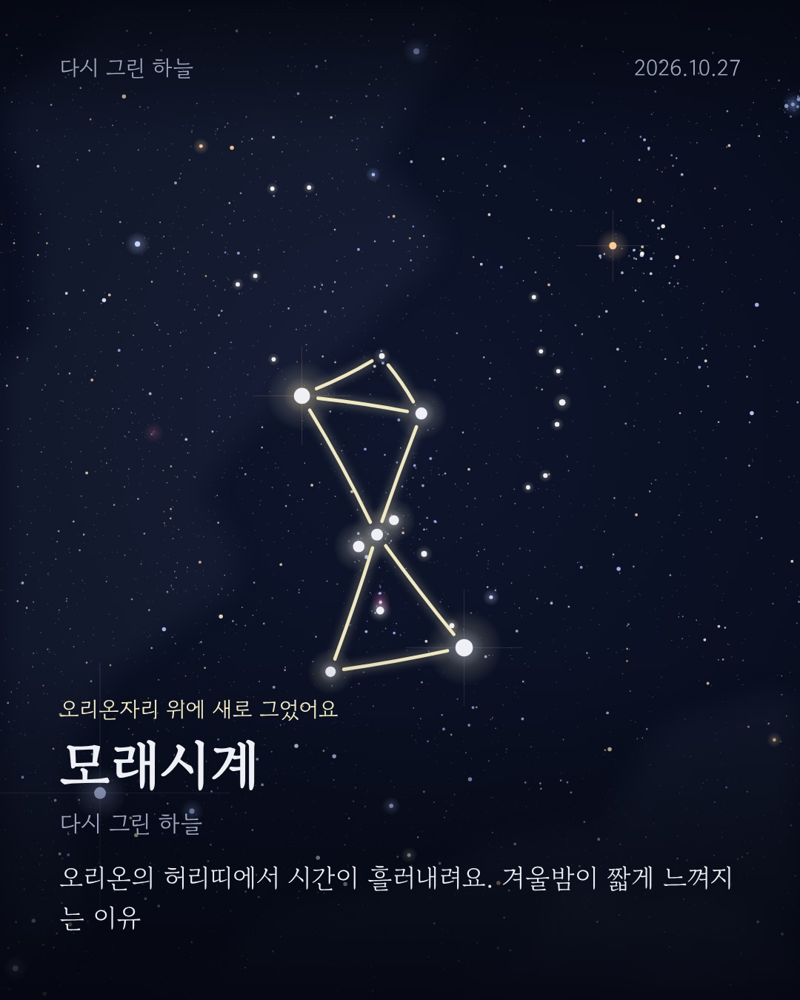
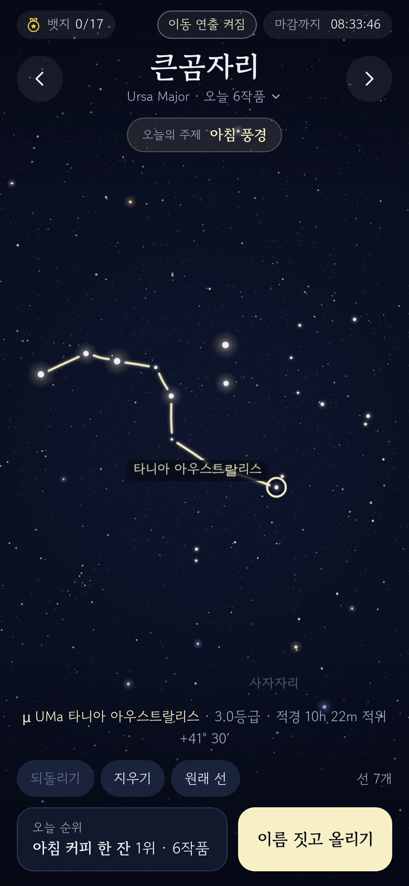
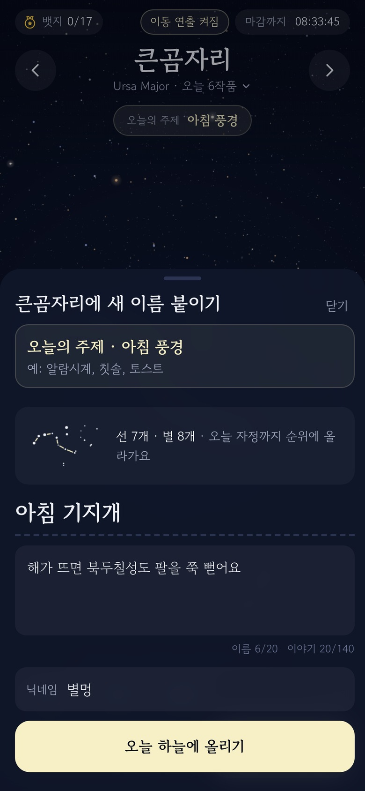
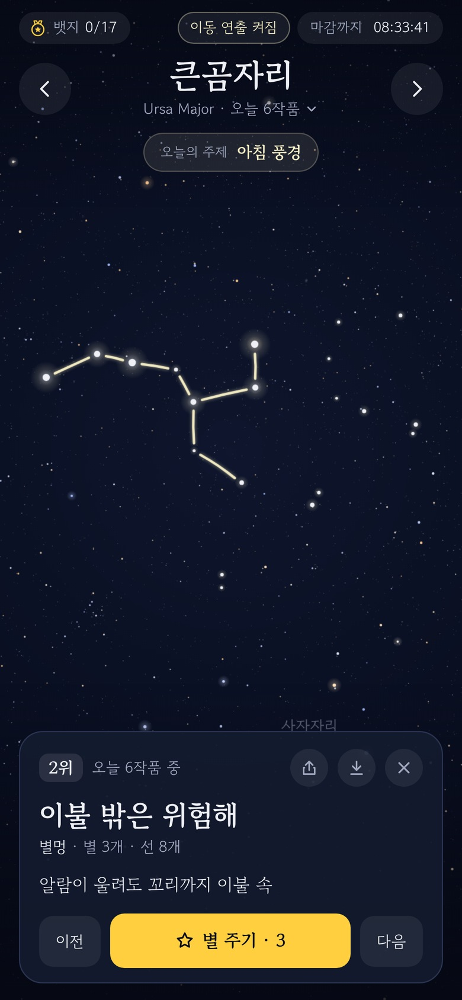
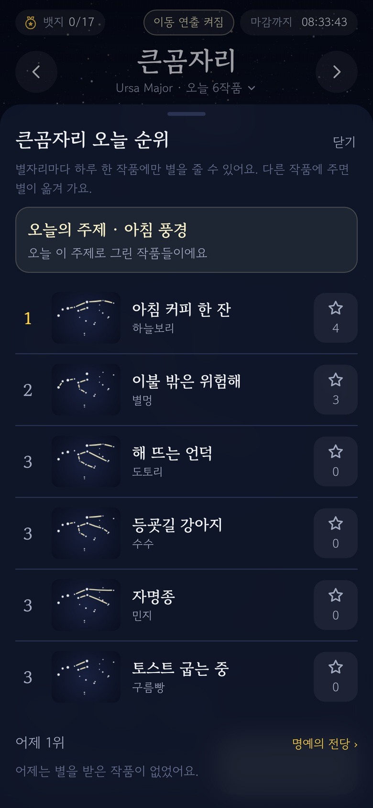

다시 그린 하늘
진짜 밤하늘의 별을 다시 이어 나만의 별자리를 만들고,
이름과 이야기를 붙여 서로 별을 주는 웹 게임
무료 · 설치 없음 · 휴대폰 브라우저로 바로

어떤 게임인가요
① 진짜 별을 이어요오리온, 큰곰, 카시오페이아 같은 별자리 8개와 옛 그림이 없는 하늘 10곳에서, 별을 눌러 선을 이어요.
② 이름과 이야기를새 별자리에 이름을 짓고, 왜 그렇게 보였는지 한두 줄 이야기를 붙여요.
③ 서로 별을 줘요마음에 드는 작품에 별을 주고, 매일 자정 별자리마다 1위가 정해져 명예의 전당에 남아요.
수업과 관측회에 좋은 이유
실제 관측 자료별의 위치·밝기·색은 히파르코스 위성 관측을 정리한 XHIP 목록, 은하수 모양은 실제 윤곽 데이터를 써요. 별을 누르면 이름·등급·적경·적위가 나와요.
신화가 생기는 과정‘원래 선’을 켜면 옛사람이 그린 그림과 이야기가 나와요. 같은 별에서 서로 다른 그림을 보는 경험이 별자리의 본질을 보여 줘요.
부담 없는 참여회원가입 없이 닉네임만으로 참여해요. 광고가 없고 개인정보를 모으지 않아요. 한 반이 같은 하늘에 모이면 바로 순위가 생겨요.
화면 휴대폰 화면 예시

별을 이어요

이름과 이야기

마음에 드는 작품에 별

오늘의 순위
이렇게 써 보세요
| 수업 20분 |
- 5분 오늘의 별자리를 화면에 띄우고 ‘원래 선’으로 옛 그림과 신화를 소개해요.
- 10분 학생들이 각자 휴대폰으로 같은 별을 다시 이어 이름과 이야기를 붙여요.
- 5분 서로의 작품을 보고 별을 줘요. “같은 별인데 왜 다르게 보였을까?”로 마무리해요.
|
|---|
| 천체투영관 | 상영이 끝난 뒤 방금 본 별자리를 관람객이 직접 다시 그려 보는 활동으로 이어 가요. 입구나 출구에 QR 코드만 두면 돼요. |
|---|
| 관측회 | 망원경 앞 대기 시간에 오늘의 하늘을 다시 그리고, 관측회가 끝날 때 그날 1위를 함께 확인해요. |
|---|
| 특집 날 | 해마다 같은 날 특집이 열려요. 11월 17일 사자자리 유성우, 12월 14일 쌍둥이자리 유성우, 4월 22일 거문고자리 유성우, 8월 12일 페르세우스자리 유성우 때 유성우 관측회와 함께 쓰기 좋아요. |
|---|
같은 별, 다른 그림
왼쪽은 옛사람이 그린 오리온(사냥꾼), 오른쪽은 같은 별을 다시 이은 예시 작품(모래시계)이에요.
함께하고 싶어요
교육 프로그램, 관측회, 전시 연계 등 어떤 방식이든 편하게 연락 주세요. 기관 행사에 맞춘 ‘오늘의 주제’나 특집 날을 따로 열어 드릴 수도 있어요.